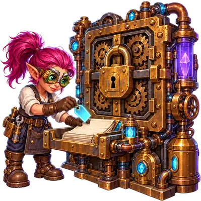
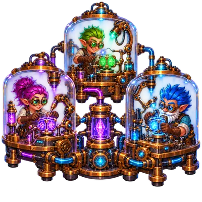
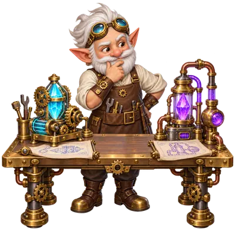
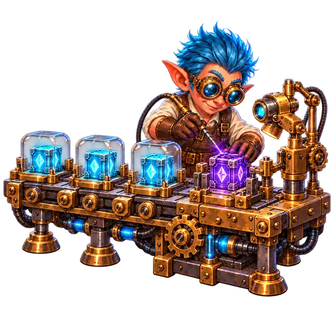
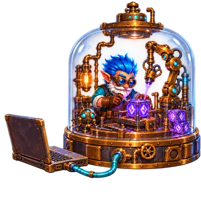

Open source · Apache 2.0 · Java 25
An autonomous AI software factory
Gnomes — AI coding agents — take tasks from your tracker and drive them through a pipeline of verifiable stages. Humans handle only escalations.
Zero-token orchestration. Model tokens pay for the gnome's work and the judge's verdict, never for taking tasks, starting boxes, running checks, or escalating.
Status: runs end to end and feeds itself from the tracker, but is not
feature-complete yet. The api executor is not built.
Humans as exception handlers, not participants

Zero-token orchestration
Claiming tasks, starting container boxes, running checks, committing attempts and escalating are plain code. The model is called only when a gnome works or a judge grades, so the token budget goes to the work, not to the management.

Stateless instances
Several factory instances serve one project at once. Everything they need lives in two shared places: the task tracker and the task's git branch.

Escalate, never wait
When a task is blocked or a choice is undecidable, the factory files a report, moves on to other tasks, and any instance resumes once a human has decided.
How it works
-
Take a task
A task labeled
gnomish:readyin the tracker is claimed under a heartbeat lease. The factory opens a task branch and an isolated working copy for it, by default inside a container box. -
Run the pipeline
Stages are declared in the target repository under
.gnomish/. A gnome performs each stage, an ordered check list verifies it, and a failed check feeds its findings back into a re-run. -
Deliver or escalate
When every check passes the task advances. When attempts run out or a choice is undecidable, the task is parked as
gnomish:needs-humanwith the full findings history. A human replies in a comment and moves it back to ready.

What makes autonomous runs safe
The gnomish:ready label is a code-execution grant: whoever may set it may
run code in your factory. The autonomy gate guide
explains who should hold it.
-
Declarative stages
The pipeline is configuration in the target repository. Adding or splitting a stage is a config change, not a factory release.
-
Machine-verifiable checks
Built-in file and schema checks, any executable via
command, asynchronousexternalchecks such as CI, and an LLMjudgegraded against written acceptance criteria. Checks run in the order the stage declares, and the first failure stops the chain: put cheap deterministic checks first and the judge last, so a red test never costs a model call. -

Container sandbox
Each task runs in an ephemeral container box with a default-deny egress allowlist. The tracker and CI tokens never reach the gnome; only the model credential and the variables you pass through do. Host execution is the opt-in legacy mode.
-
Resumable by design
Every attempt, failed ones included, is committed to the task branch with a state file. Any instance can resume mid-retry.
-
Multi-instance safety
Claim leases with heartbeats, a reaper for dead claims, takeover of stuck tasks, and fencing that stops a zombie's writes.
-
Observable
Read-only
statusandusagestraight from the branch, a tracker board, an HTML dashboard, and a ledger for monitoring an unattended daemon.
Install
Prerequisites: Java 25 or newer, git, and Docker for the default container mode (host mode is the opt-in alternative). Runs on macOS and Linux; Windows through WSL2.
VERSION=0.1.0
BASE=https://github.com/oinsio/gnomish-factory/releases/download/v$VERSION
curl -fL -O "$BASE/gnomish-$VERSION.tar.gz" -O "$BASE/SHA256SUMS"
sha256sum -c --ignore-missing SHA256SUMS # macOS: shasum -a 256 -c --ignore-missing SHA256SUMS
tar -xzf "gnomish-$VERSION.tar.gz"
export PATH="$PWD/gnomish-$VERSION/bin:$PATH"
gnomish --versionBefore the first run
- The target repository carries a
.gnomish/pipeline, committed and pushed. Start from a reference pipeline. - A sandbox image is built from the shipped recipe and named in the project's
project.yaml. - The agent credential is in the factory's environment and the model's host is on the egress allowlist.
- Add a
trackersection in.gnomish/config.yaml, prepare aGNOMISH_GITHUB_TOKENsecret file, and label an issuegnomish:ready.
First run
# register a clone of your project once
gnomish project add your-project-name --dir=/path/to/target-repo
# one ad-hoc task, no tracker: task branch, isolated working copy, resume
gnomish --task="fix the flaky login spec" --dir=/path/to/target-repo
# tracker-driven: claim the head of the ready queue, work it, exit
gnomish take --dir=/path/to/target-repo
# autonomous daemon under a WIP-bounded scheduler
gnomish serve --dir=/path/to/target-repoReleases and checksums: github.com/oinsio/gnomish-factory/releases. The full command reference lives in the operator guide.